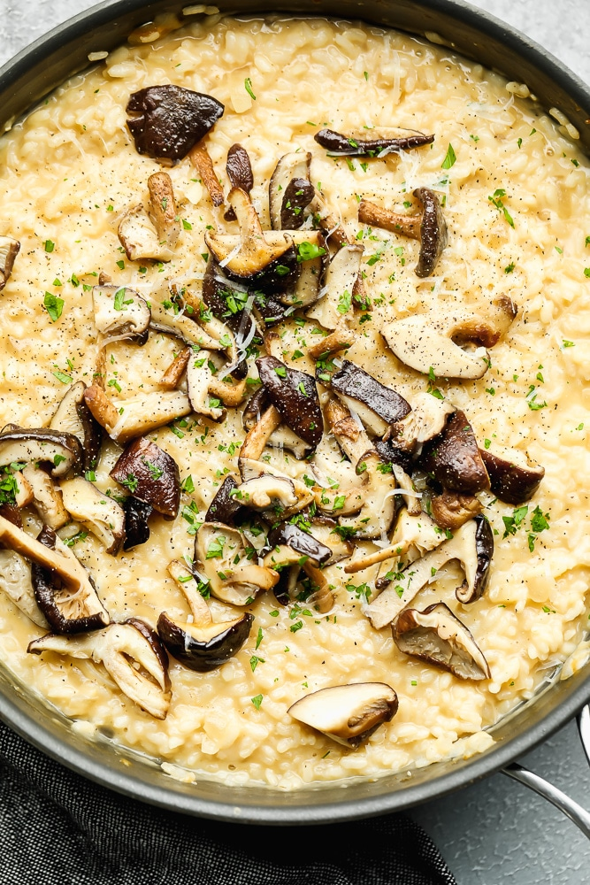

Vegan Mushroom Risotto

Description
Recipe source: The Nora Cooks blog. Original description: This easy Vegan Mushroom Risotto is perfect for date night. Simple ingredients and tender mushrooms elevate every bite of the creamy rice for a truly comforting and earthy dish!
Ingredients
- 8 ounces cremini or baby bella mushrooms, cleaned and quartered
- 2 tablespoons vegan butter
- pinch of salt
- 5 cups warm vegetable broth
- 2 tablespoons olive oil
- 1 small sweet onion, diced
- 3 cloves garlic, minced
- 1 1/2 cups arborio rice
- 1/2 cup dry white wine
- 3/4 cup full fat coconut milk OR unsweetened vegan creamer
- 3/4 cup grated vegan parmesan cheese, like Violife
- salt + black pepper, to taste
Steps
- In a large non-stick pan (I use the same one I cook the risotto in), melt the vegan butter over medium-high heat.
- Add the cleaned and quartered mushrooms to the pan and sauté for about 5 minutes until lightly browned. Once they are browned, sprinkle a little salt on top and sauté for 1 more minute.
- Remove the mushrooms from heat, transfer to a plate, cover to keep warm and set aside while you make the risotto.
- In the same pan over medium heat, add the olive oil and warm. Now add the chopped onion and cook for 2-3 minutes, then add the garlic and cook for 1 more minute. Add the rice and stir to coat with the oil, sautéing for about 2 more minutes.
- Next, add the white wine and stir constantly until the wine is fully absorbed.
- Add 1/2 cup of the warm broth, and stir until absorbed. Continue adding 1/2 cup broth at a time, stirring frequently until absorbed each time, until all the liquid has been absorbed and the rice is al dente (tender, yet slightly chewy), about 20-30 minutes. The heat should be high enough that the rice/broth is bubbling soon after you add it, but not boiling too much or the liquid will absorb too quickly. If you've used all the broth and it still doesn't taste tender enough, keep adding water or more broth until it's done.
- Once all the liquid is absorbed, stir in the coconut milk or vegan creamer and most of the parmesan cheese, saving some for the top.
- To serve, divide risotto onto plates and top with mushrooms and more parmesan, and parsley if desired. Enjoy!
Return to Main Page.